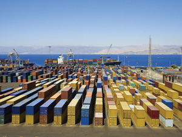

Trade Compliance
GTA offers the following expert services in the dynamic and complex area of global trade regulation and compliance:
- Import Consulting, including
- Product classification and duty determination;
- Valuation analysis;
- Country of origin determination;
- Marking requirements;
- Free Trade Agreements and other duty exemption programs;
- Recordkeeping requirements;
- Import requirements for other government agencies such as the FDA, EPA, USDA, FWS, DEA and FCC;
- Customs-Trade Partnership Against Terrorism (C-TPAT) & Importer Self-Assessment (ISA) certification; and
- Focused Assessment guidance.
Client Advisory
- Export Consulting, including
- Jurisdiction determination (DOC, DOS, and all other U.S. Government agencies);
- Classification of Commerce Controlled and Munitions List items;
- License requirement determination for U.S. exports based on product classification, end users and destination;
- Assistance with DOC and DOS licensing applications and license records maintenance;
- Country of origin analysis for Free Trade Agreements;
- Assistance determining import/export document and compliance requirements of foreign countries;
- Review of documents, procedures and completed files;
- Assistance in understanding and complying with anti-boycott and anti-bribery regulations;
- HTS andSchedule B classification; and
- U.S. Census reporting under the AES regulations.
- Import and Export Compliance Assessments - a review of existing procedures by interviewing key participants and analyzing sample transactions in order to identify possible instances of non-compliance or areas for improvement.
- Import and Export Compliance Programs - establishment of a formal, centralized import/export compliance program modeled on the Bureau of Industry and Security and Customs and Border Protection best practices.
- Import and Export Compliance Manuals and Standard Operating Procedures - an inclusive formal document addressing the full spectrum of laws affecting cross-border movement of products and/or services.
- Import and Export Compliance Training - education of employees, contractors and executives on both compliance policy and daily implementation.